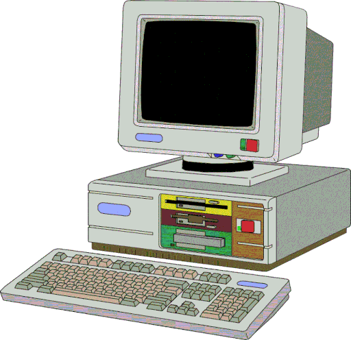

Microsoft Word XP: Es un programa Procesador de Tex tos que se utiliza para escribir todo tipo de documentos. Con este programa podrá escribir desde documentos tan sencillos como una carta hasta documento s tan avanzados como un libro. La última versión de Word es la 2002 ó XP
Microsoft Excel XP: Es una Hoja de Cálculo que se utiliza para manipular datos numéricos y expresarlos también en forma gráfica. Este programa cuenta además con utilidades para manejar bases de datos y resolver problemas avanzados como los tratado s en la Programación Lineal. La última versión de Excel es la 2002 ó XP
Microsoft PowerPoint XP: Es un programa que se utiliza para realizar presentaciones tipo multimedia, o sea que incluyan imágenes, sonido y video. Se recomienda usarlo con un Proyector para que la audiencia pueda ver la presentación con todo detalle. La última versión de PowerPoint es la 2002 ó XP